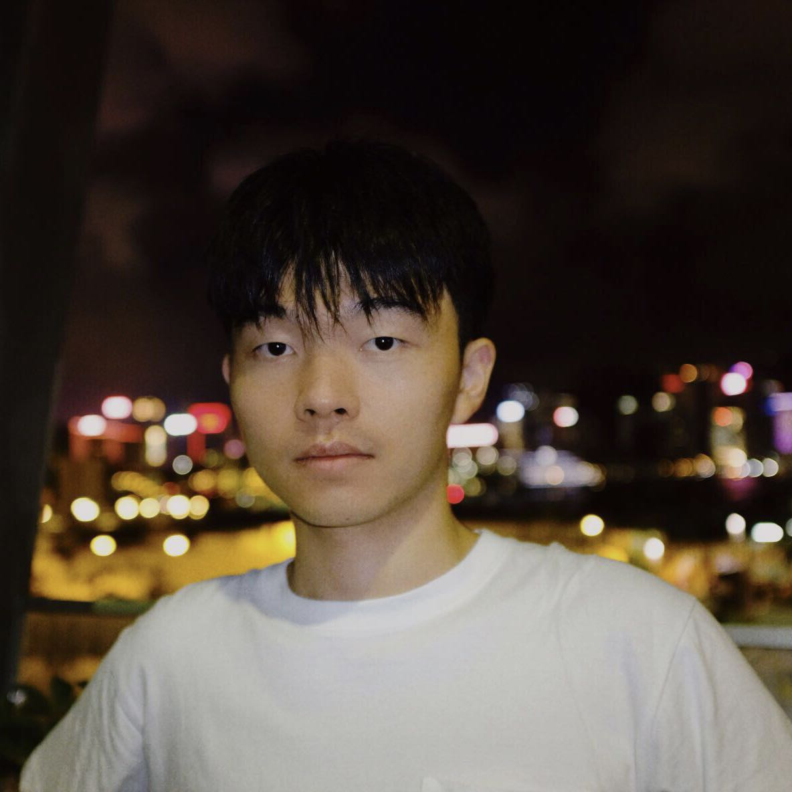

Dapeng Hu
National University of Singapore
lhxxhb15 (at) gmail.com
[Google Scholar]
About Me
I am a Ph.D. student in Electrical and Computer Engineering at National University of Singapore, supervised by Prof. Jiashi Feng and Prof. Xinchao Wang. My research lies in transfer learning and computer vision, specifically in the following topics:
- Domain adaptation and semi-supervised learning: How to leverage unlabeled data for training a task-specific model?
- Representation learning and self-supervised learning: How to pre-train a generalized representation model?
- Model-based transfer learning and fine-tuning: How to transfer the knowledge in a pre-trained source model to a given domain or task?
- Large-scale empirical studies on deep learning models: How to observe, understand, and explain the behavior of deep neural networks?
Education
Aug 2013 - Jun 2017
B.Sc. in Electronic Information Science and Technology
Nanjing University
GPA: 90/100
Publications
- UMAD: Universal Model Adaptation under Domain and Category Shift
Jian Liang, Dapeng Hu*, Jiashi Feng, & Ran He.
Under Review, Arxiv 2021.
[PDF]
- DINE: Domain Adaptation from Single and Multiple Black-box Predictors
Jian Liang, Dapeng Hu, Jiashi Feng, & Ran He.
In Computer Vision and Pattern Recognition, CVPR 2022.
[PDF]
- How Well Does Self-Supervised Pre-Training Perform with Streaming Data?
Dapeng Hu, Shipeng Yan*, Qizhengqiu Lu, Lanqing Hong, Hailin Hu, Yifan Zhang, Zhenguo Li, Xinchao Wang, & Jiashi Feng.
In International Conference on Learning Representations, ICLR 2022.
(The shorter version was presented in NeurIPS 2021 Workshop on ImageNet: Past, Present, and Future, NeurIPS ImageNet PPF 2021).
[PDF]
- Adversarial Domain Adaptation with Prototype-based Normalized Output Conditioner
Dapeng Hu，Jian Liang*, Qibin Hou, Hanshu Yan, & Yunpeng Chen.
In IEEE Transactions on Image Processing, TIP 2021.
[PDF]
- Source Data-absent Unsupervised Domain Adaptation through Hypothesis Transfer and Labeling Transfer
Jian Liang, Dapeng Hu，Yunbo Wang, Ran He, & Jiashi Feng.
In IEEE Transactions on Pattern Analysis and Machine Intelligence, TPAMI 2021.
[PDF]
- No Fear of Heterogeneity: Classifier Calibration for Federated Learning with Non-IID Data
Mi Luo, Fei Chen, Dapeng Hu, Yifan Zhang, Jian Liang, & Jiashi Feng.
In Advances in Neural Information Processing Systems, NeurIPS 2021.
[PDF]
- Unleashing the Power of Contrastive Self-Supervised Visual Models via Contrast-Regularized Fine-Tuning
Yifan Zhang, Bryan Hooi, Dapeng Hu, Jian Liang, & Jiashi Feng.
In Advances in Neural Information Processing Systems, NeurIPS 2021.
[PDF]
- Domain Adaptation with Auxiliary Target Domain-Oriented Classifier
Jian Liang, Dapeng Hu, & Jiashi Feng.
In Computer Vision and Pattern Recognition, CVPR 2021.
[PDF]
- Do We Really Need to Access the Source Data? Source Hypothesis Transfer for Unsupervised Domain Adaptation
Jian Liang, Dapeng Hu, & Jiashi Feng.
In International Conference on Machine Learning, ICML 2020.
[PDF]
- A Balanced and Uncertainty-aware Approach for Partial Domain Adaptation
Jian Liang, Yunbo Wang, Dapeng Hu, Ran He, & Jiashi Feng.
In European Conference on Computer Vision, ECCV 2020.
[PDF]
(* denotes equal-first contribution.)
Professional Service
- Journal Reviewer: TMLR 2022.
- Conference Reviewer: ICML 2021-2022, NeurIPS 2021-2022, ICLR 2022, CVPR 2022.
- Workshop Reviewer: NeurIPS ImageNet PPF 2021.
- Teaching Assistant: EE6934 Deep Learning (Advanced), EE5934 Deep Learning, EE4704 Image Processing and Analysis, EE2028 Microcontroller Programming and Interfacing.